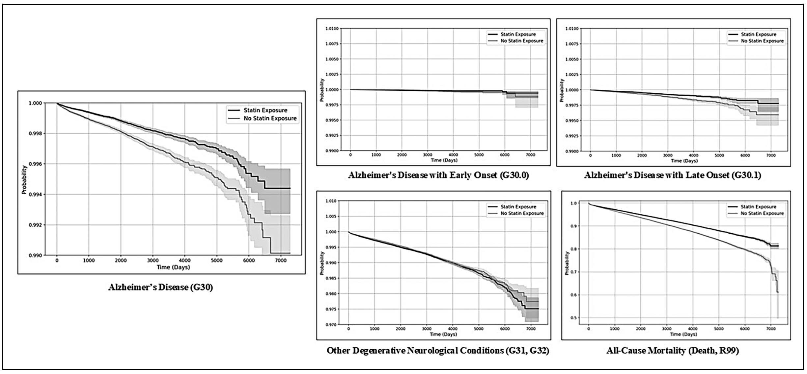

Social media is full of claims that statins cause dementia, feed cancer, destroy testosterone, poison mitochondria, drain the brain of cholesterol or are useless in the elderly. The group's posts, mostly by admin Louis Nervegna with contributions from Gokhan Can, go through these claims one by one against the published trials, meta-analyses and genetic studies.
The short version is that the best available evidence does not support the claims of serious harm. Randomized trials show no increase in cancer or dementia, and the observational data lean toward a neutral or protective association. Some real, smaller effects exist and are discussed below: a modest rise in blood sugar, muscle symptoms in some people, and a drop in total testosterone too small to matter for most men.123
The posts are also frank about where evidence is thin. Many of the encouraging dementia findings are observational and cannot prove cause and effect, and some mechanistic arguments (for example about mitochondria) are the admins' interpretation rather than trial results. This article tries to keep those categories separate. It is a summary of group discussion, not medical advice.
Where the myths come from: one pathway, several fears
Statins block an enzyme, HMG-CoA reductase, in the mevalonate pathway that the body uses to make cholesterol. The same pathway also produces CoQ10, so statins lower CoQ10 as well.8 Cholesterol is also the raw material for hormones such as testosterone.3 A chain of logical-sounding fears follows: less cholesterol must mean less testosterone, a starved brain and damaged cells. The sections below check each link against the evidence.
Dementia and memory
Does cholesterol lowering starve the brain?
Louis explains that the brain makes all of its own cholesterol locally, separate from the cholesterol in the blood, and the blood-brain barrier does not let blood cholesterol in. Drugs such as PCSK9 inhibitors and ezetimibe act only on blood cholesterol and so have no effect on brain cholesterol production.9 Lipophilic (fat-soluble) statins like atorvastatin do cross the barrier; hydrophilic statins like rosuvastatin do so poorly.69
What observational studies show
Several pooled analyses of observational data point toward lower dementia risk among statin users:
- A meta-analysis of observational studies found statin use associated with 20% lower dementia risk (36 studies, odds ratio 0.80) and 32% lower Alzheimer's risk (21 studies, odds ratio 0.68). Its authors noted that this confirms the absence of a neurocognitive risk and called for randomized trials.10
- A 2025 meta-analysis of 55 observational studies in about 7 million people found 14% lower all-cause dementia and 18% lower Alzheimer's risk. Louis corrected a video that described it as a clinical-trial analysis: these were cohort and case-control studies, not randomized trials.11 Another summary of the same analysis reports a 63% lower risk after at least three years of use, stronger effects in type 2 diabetes, and a 28% reduction with rosuvastatin.1213 Those figures differ markedly from the 14% pooled number, which is a reminder to treat subgroup results cautiously.
- A report on a heart-failure cohort found 20% lower dementia risk,14 a Swedish registry of about 15,600 people with Alzheimer's or mixed dementia found slightly slower cognitive decline in statin users (about 0.63 points on the MMSE test over three years),15 a Danish study of people with type 2 diabetes tied earlier statin starts to about 15% lower dementia over a decade,16 and a very large analysis described as covering about 125 million people reported lower Alzheimer's risk and lower mortality.17
The limits matter. The Swedish researchers themselves said their study "doesn't prove causality" and did not mean that people with dementia should be treated with statins, though they saw no support for withholding a statin from someone who needs it.15 Louis also notes that single observational studies can be cherry-picked in either direction but that, taken as a whole, they suggest a protective effect or at least no harm.18 One of the large analyses he shared acknowledges that randomized trials show a neutral effect.17

What randomized trials show
- Two trials gave statins to people who already had mild to moderate Alzheimer's disease: simvastatin (406 participants, 18 months) and atorvastatin 80 mg (the LEADe trial, 640 participants, 72 weeks). Neither slowed nor worsened progression, and simvastatin showed no increase in adverse events.19
- The SAMSON trial of people who had stopped statins because of side effects also found that complaints of short-term memory loss were a nocebo effect, according to Louis.6
- STAREE, a large trial in healthy older adults, found no significant increase in dementia (hazard ratio 1.03).4 Before it reported, Louis reasoned that because it was not stopped early for harm, there was no major harm signal; the PREVENTABLE trial's principal investigator made a similar point about its safety board.112
- Two large trials were designed specifically to test dementia prevention: PREVENTABLE (about 20,000 adults aged 75 and over, atorvastatin 40 mg, started in 2020) and STAREE.2021 STAREE's co-primary outcome of disability-free survival (which includes staying free of dementia) was not significantly improved, 12.8% versus 13.6% (hazard ratio 0.94).7
Louis's reading is that waiting until old age to start is unlikely to either help or harm the brain, and that earlier starts may be needed to see any protective effect.16
Genetic evidence
A 2025 Mendelian randomization study (which uses gene variants that act like lifelong drug exposure) in about one million people found that variants mimicking statins and ezetimibe were linked to a 76% and 82% lower dementia risk per roughly 40 mg/dL drop in non-HDL cholesterol, while PCSK9-like variants showed no benefit.2223 Louis and Gokhan argue this helps explain why short late-life trials may show nothing: lifelong exposure may matter, and genetic studies are not vulnerable to the reverse causality that can distort observational data, because cholesterol often falls in the years before a dementia diagnosis.2223 This is an argument from genetics rather than a trial of a statin.
APOE4 carriers and the desmosterol test
A neurologist's article that Louis recommends separates two questions: treating people who already have mild cognitive impairment or Alzheimer's, where the case is weak, and vascular prevention in people with high LDL, including those who carry the APOE4 gene, which he suggests deserves a careful discussion with a clinician.24 Louis also doubts the Boston Heart desmosterol test sold to healthy people as an Alzheimer's risk check, arguing that lower desmosterol in healthy people has been linked to lower, not higher, dementia risk.25
Cancer
Louis and Gokhan summarize several analyses of randomized trials:
- A 2012 analysis of 22 randomized trials (134,537 participants, median follow-up 4.8 years) found annual cancer incidence of 1.4% and cancer mortality of 0.5% in both statin and control groups. A 2023 meta-analysis of 35 trials found an odds ratio of 0.99 for incidence and 0.99 for mortality, with no effect by cancer type, statin type or duration.226
- A 2017 analysis of 21 placebo-controlled trials (65,196 participants) found a relative risk of 0.97,2 and the 27-trial CTT analysis of women and men saw no adverse effect on cancer incidence.27
- After a long follow-up, WOSCOPS (5 years of pravastatin) showed lower all-cause and cardiovascular mortality at 20 years with no increase in cancer or non-cardiovascular mortality.28
Show data
| Statin | Control | |
|---|---|---|
| Cancer incidence per year | 1.4% | 1.4% |
| Cancer death per year | 0.5% | 0.5% |
So the claim that statins cause cancer has not held up in randomized data, and the posts also caution against the opposite exaggeration. Statins mostly failed to improve outcomes when tested as cancer treatments, but they did not worsen them or make existing cancer spread.29 Gokhan's summary is that statins "neither cause nor cure cancer" in general populations.26
Some narrower findings are more hopeful but weaker. Observational data link statins to lower advanced and fatal prostate cancer and, after a high-risk prostate cancer diagnosis, to 42% lower prostate cancer death,230 and to roughly 35% lower odds of liver cancer.31 Laboratory studies suggest statins may block an inflammatory pathway involved in some cancers and that statins combined with sildenafil may limit metastasis in preclinical models.3233 These are preclinical or observational leads, not proof of benefit.
Testosterone and sexual function
Because cholesterol is the raw material for testosterone, the fear is intuitive. Gokhan's post reviewing the research reports that meta-analyses find a statistically significant but small reduction in total testosterone, about 9-13 ng/dL, against a normal range of about 300-1,000 ng/dL, which he describes as rarely enough to push a healthy man into low testosterone.3 He adds that statins often improve erectile function scores in men with high cholesterol and erectile dysfunction, by about one-third to one-half of the effect of Viagra as stated in the post, through better endothelial (blood vessel lining) function. He notes that erectile dysfunction is often an early sign of heart disease.3
Mitochondria and CoQ10
"Statins damage mitochondria"
Louis argues that the mild mitochondrial stress statins cause is hormetic: a small stress that switches on protective pathways, similar to how metformin, exercise and calorie restriction are thought to work, rather than harm. He cites a 2006 study showing statins activate the AMPK energy-sensing pathway and a 2012 paper on "mitohormesis" as a possible pleiotropic effect.34353637 He stresses that dose determines whether such stress is beneficial or toxic, and that outright mitochondrial damage requires doses far above those used in people.3536 These are mechanistic arguments from the admin and from laboratory work; they are not a clinical trial showing mitochondrial benefit in patients.
"Statins deplete CoQ10, so I need a supplement"
The CoQ10 point is partly true. Statins do lower plasma and immune-cell CoQ10, because both depend on the mevalonate pathway.838 The effect on CoQ10 in muscle tissue, however, is barely detectable, and a post Louis shared concludes that CoQ10 supplements will not reliably prevent statin muscle symptoms, since the best-designed trials show no benefit.38 Louis agrees that most CoQ10 trials for statin muscle pain have failed, though he considers it reasonable to try CoQ10 since statins do lower its production.39 He is himself a fan of CoQ10 for other reasons.38
Muscle, liver and blood sugar
Muscle
Louis says rhabdomyolysis (serious muscle breakdown) from statins occurs in about 1 in 100,000 people, or perhaps 1 in 10,000 if being conservative, and is very different from the more common muscle aches.40 He argues that statin myopathy occurs in people with a genetic susceptibility linked to variants in HMG-CoA reductase-related genes,3940 and that as much as 90% of reported statin side effects may be nocebo effect, based on the SAMSON trial.639 He cites nutrition researcher Tim Spector, who had a mini stroke at 53, as an example of someone who decided his muscle cramps were nocebo-driven and resumed a statin.41 Louis also recommends lowering the dose, switching statins (for example to pitavastatin or pravastatin) or using non-statin LDL-lowering drugs when muscle pain is troublesome.39
Liver
A review shared by Louis says statins were once considered harmful to the liver, but current evidence suggests possible benefit in chronic liver disease, though trials are still needed.42 Statin use is associated in observational data with lower liver cancer and decompensation.3143

Blood sugar
The diabetes signal is real but small. In a pooled analysis of 13 trials (91,140 patients), treating 255 people for four years caused one extra case of diabetes while preventing 5.4 cardiovascular events.6 Louis also points out that a keto diet produces a much larger temporary muscle insulin resistance than statins do, and that both effects reverse when the diet or drug is stopped.44
Statins in older adults
The STAREE trial
STAREE enrolled 9,971 adults aged 70 and over with no cardiovascular disease, diabetes or dementia (mean age 74.7, 52% women), giving atorvastatin 40 mg or placebo for a median of 5.9 years.47 Major cardiovascular events fell from 8.3% to 6.0% (hazard ratio 0.70).7 Heart attacks and revascularizations were each about 43% lower, with no significant increase in dementia or all-cause mortality and serious adverse events of 2.7% in both groups.4 One reading puts the number needed to treat at 37 over about six years, with benefit holding in people aged 75 and over and a starting LDL near 127 mg/dL.45 On the other hand, disability-free survival, one of the two primary outcomes, was not significantly improved, and overall mortality did not differ significantly.745 Louis's pre-results prediction that STAREE would show neither major harm nor spectacular benefit on the brain endpoints was therefore broadly borne out, though the cardiovascular benefit was substantial.14
Show data
| Atorvastatin 40 mg | Placebo | |
|---|---|---|
| Major cardiovascular events | 6.0% | 8.3% |
| Disability-free survival endpoint | 12.8% | 13.6% |
| Serious adverse events | 2.7% | 2.7% |
Starting late, and stopping
- A JAMA study of 326,981 mostly male veterans aged 75 and over without cardiovascular disease found that those who started statins had 25% lower overall mortality and 20% lower death from heart attack or stroke. It is observational and shows association only.46
- Observational studies of older veterans linked new statin use to less frailty, and the group notes that both STAREE and PREVENTABLE track it. Randomized confirmation is still needed.4748
- In the STREAM trial, 1,880 adults aged 70 and over without known cardiovascular disease were randomized to continue or stop statins. Heart attack, ischemic stroke or death occurred in 12.7% of those who stopped and 9.2% of those who continued, about 38% more events in relative terms. The trial was declared noninferior under its predefined margin, and stopping brought no meaningful improvement in muscle pain, quality of life, falls or sarcopenia; the safety board recommended that those who stopped discuss restarting. Louis argues that "noninferior" does not mean identical, and that stopping simply because someone turned 70 is not something he would recommend, while acknowledging that frailty, life expectancy, adverse effects and individual risk matter.5
- A discussion of evidence after age 75, including STAREE and the SAGA/SITE trials, was recommended by Louis.49
How to weigh online claims
Louis's general advice to people at high risk is to find a good cardiologist, to add natural or alternative approaches to treatment rather than replace it, and to reduce medications only together with that cardiologist if the condition markedly improves. He warns against drawing conclusions from one cherry-picked study out of many.50 He also argues that statin trials look modest in absolute terms only because they run for about five years: absolute risk reductions of 1.1% to 4.7% in such trials are, in his words, large against a roughly 20% lifetime risk.5152
What this means for you
- If you are worried about dementia, the group's posts point to a neutral or possibly favorable picture. Statins did not increase dementia in STAREE and the trials in existing Alzheimer's were neutral. Louis notes that rosuvastatin barely crosses into the brain, while lipophilic atorvastatin does and was chosen for the dementia-prevention trials.491920
- If you worry about cancer, randomized data show no effect either way.226
- If you notice muscle aches, the admins suggest discussing a lower dose, a different statin or a non-statin drug with your doctor, rather than assuming the cause, since blinded trials point to a large nocebo component.639
- If you are over 70, Louis does not recommend stopping a statin simply because of age, but he agrees that frailty, life expectancy, side effects and individual risk matter, so the decision is one to discuss with your doctor. STAREE and STREAM both showed cardiovascular differences.57
- Check claims against randomized trials and meta-analyses and not against a single observational result or an influencer's summary.1850
Frequently asked questions
Do statins cause dementia?
Randomized evidence does not show that they do. STAREE found no significant rise in dementia, and observational meta-analyses mostly find lower risk, although those cannot prove protection.410
Do statins cause cancer?
Across 22 to 35 randomized trials, no. The odds ratio for cancer incidence was 0.99 in a 2023 meta-analysis.226
Do statins destroy testosterone?
They lower total testosterone slightly, about 9-13 ng/dL on average, which is small against a normal range of 300-1,000 ng/dL, and often improve erectile function scores in men with high cholesterol.3
Do statins damage mitochondria or deplete CoQ10?
Statins do lower plasma CoQ10, but muscle CoQ10 barely changes and CoQ10 supplements have not reliably prevented muscle symptoms. Louis argues that the mild mitochondrial stress is hormetic rather than harmful; this is a mechanistic argument.3538
Are statins pointless in older people?
STAREE showed a 30% reduction in major cardiovascular events in healthy adults aged 70 and over, though without a significant gain in disability-free survival. In STREAM, stopping statins at 70 or over was followed by more events.57